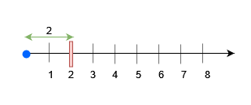
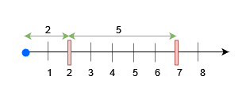

| Category | Difficulty | Likes | Dislikes |
|---|---|---|---|
| Algorithms | Hard | 146 | 32 |
uber | capital-one | visa | facebook | paypay | roblox | sig
There exists an infinite number line, with its origin at 0 and extending towards the positive x-axis.
You are given a 2D array queries, which contains two types of queries:
queries[i] = [1, x]. Build an obstacle at distance x from the origin. It is guaranteed that there is no obstacle at distance x when the query is asked.queries[i] = [2, x, sz]. Check if it is possible to place a block of size sz anywhere in the range [0, x] on the line, such that the block entirely lies in the range [0, x]. A block cannot be placed if it intersects with any obstacle, but it may touch it. Note that you do not actually place the block. Queries are separate.Return a boolean array results, where results[i] is true if you can place the block specified in the ith query of type 2, and false otherwise.
Example 1:
Input: queries = [[1,2],[2,3,3],[2,3,1],[2,2,2]]
Output: [false,true,true]
Explanation:

For query 0, place an obstacle at x = 2. A block of size at most 2 can be placed before x = 3.
Example 2:
Input: queries = [[1,7],[2,7,6],[1,2],[2,7,5],[2,7,6]]
Output: [true,true,false]
Explanation:

x = 7 for query 0. A block of size at most 7 can be placed before x = 7.x = 2 for query 2. Now, a block of size at most 5 can be placed before x = 7, and a block of size at most 2 before x = 2.
Constraints:
1 <= queries.length <= 15 * 1042 <= queries[i].length <= 31 <= queries[i][0] <= 21 <= x, sz <= min(5 * 104, 3 * queries.length)x when the query is asked.